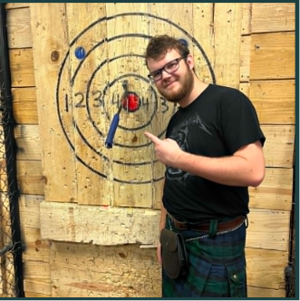

Alex Turner
Alexis a brilliant engineer who designs high-tech spy equipment for top-tier secret agents and heroes. He is intensely meticulous, loathing the thought of his advanced gear falling into enemy hands or being left behind in the field. To prevent this, he builds self-destruct mechanisms and tracking protocols into every device he creates.
Best method of contact: snail mail.
Ian Hughes
Ian is a brilliant counter-intelligence agent. He is constantly on the lookout to detect and identify potential foreign spies through the use of counter espionage. Ian's work with the FBI and DIA has yielded information on dozens of foreign and domestic threats to the hands of sweet American justice.
Email: AntiSpy572@FBI.org
Email: AntiSpy842@DIA.org
Phone: 823-124-4329

Spencer Earl
Spencer is a formidable cyber-warfare specialist. Spencer’s work with the NSA and CISA has dismantled dozens of dark-web networks and malware campaigns, keeping them far from the pristine servers of sweet American liberty.
Email: CyberAgent@NSA.org
Phone: 824-721-2567

Jonathan Harsch
[REDACTED]
email: [REDACTED]
phone: [REDACTED]
address: [REDACTED]
Sam Rutlidge
Sam is a computer building genius. He has built the servers that powers all the AIs the world uses.
Email: aiking024@gmail.com
Phone: 777-880-4440